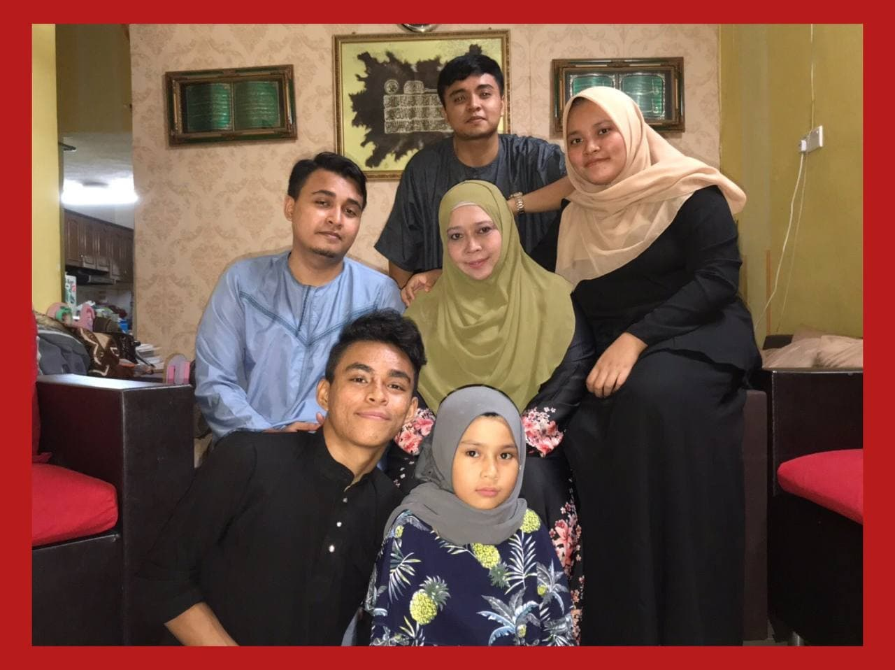

Family

We respect and esteem others regardless of age, whether young or elderly, and we should love each other. Others, however, believe that persons outside of the family may also be considered family if they are close to us, such as close friends, and so on.
For me, i consider family to be people who care the most about you and want to see you succeed. My essential values include helpfulness, respect, health, honesty, and collaboration; my family knows my values and I understand theirs. We achieve mutual respect and support through knowing one other's ideals. People with open hearts and a desire to embrace you for who you are as a human being. Even when things go wrong and a crisis arises, you can always rely on your family. Family reconnects you to your ideals and assists you in making sound decisions.
To be honest, my family is wonderful. I'd like to tell you a little bit about my family. My father works as an Assistant Medical Officer at the Pekan District Health Office, Pahang. Meanwhile, my mother is self-employed by sewing clothes, ordering cakes, and also doing small business online. Indeed, we siblings understand the fatigue of our parents who worked hard to support us all. The services of the two of them will not be reciprocated as it is too valuable. My parents are in their forties and fifties. They had been married for 11 years before divorcing when I was 11 years old. I am grateful to have had both parents who are constantly concerned about their children and do not ignore them. I have five brothers and sisters. There are three males and two females. They are all still learning with zeal and determination. My parents have the same goal of seeing their children flourish and have a happy life one day. My family is the best family on the world.